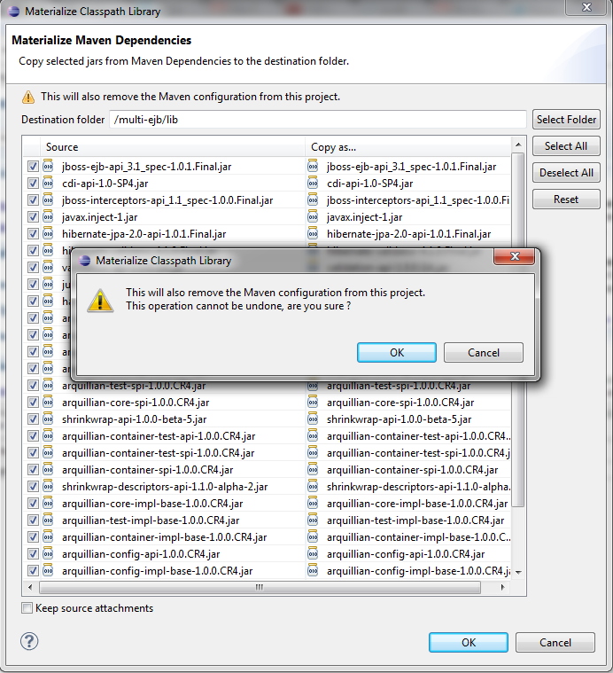

|
Materializing Classpath Library improvements
|
A few improvements were made to the Materialize Classpath Libraries feature, introduced in JBoss Tools 3.3.0.M4
- The "Copy as" column, which allows you to rename the copied file in it's destination folder, is now editable under Windows.
- There is a new option to retain the "source" attachment to classpath entries. Since these links contain the hard-coded path to the source file, it's disabled by default.
- A warning is displayed if you're about to materialize the Maven Classpath Library, as this will also remove the Maven nature from the project.
- When the Maven nature is removed from the project, the exclusion patterns on the resource folders (**) are also removed.
- The wizard tries to best guess the destination folder location : if it's a web project, it'll use either <project>/src/main/webapp/lib
or <project>/WebContent/lib, depending on what folder already exists. For other projects, it'll use <project>/lib by default

Again, feedbacks on this feature are very welcome. You can follow existing related issues using this link. Please use the "materialize_library" label when submitting new issues.
Related Jiras : JBIDE-10125,
JBIDE-10015,
JBIDE-9878,
JBIDE-9879,
JBIDE-9996
|